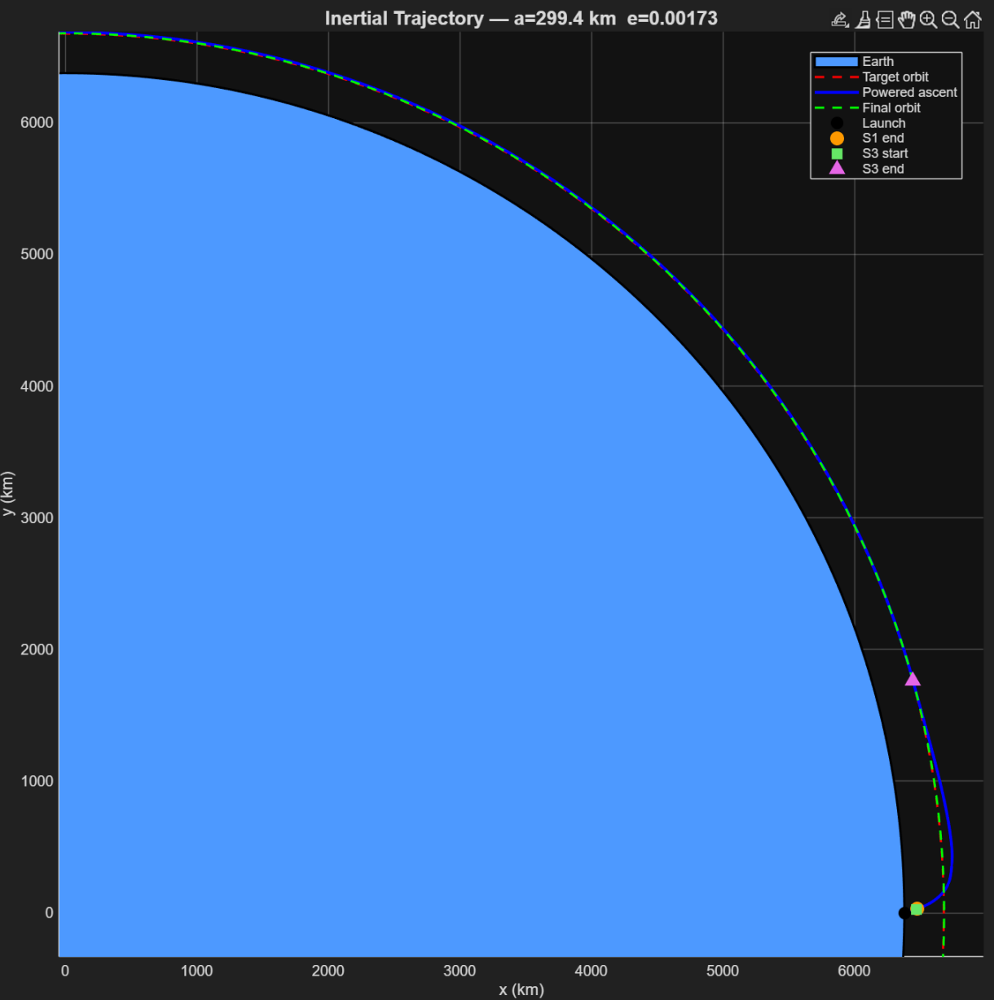
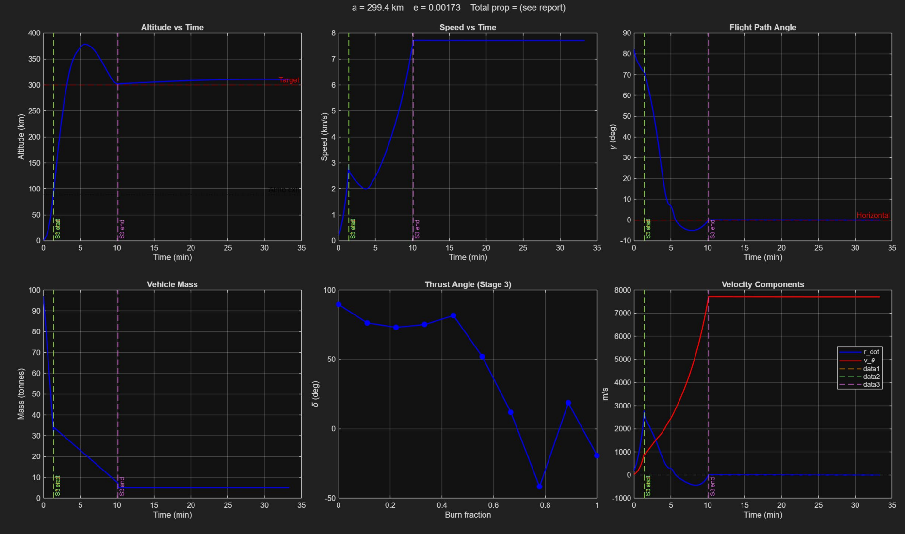
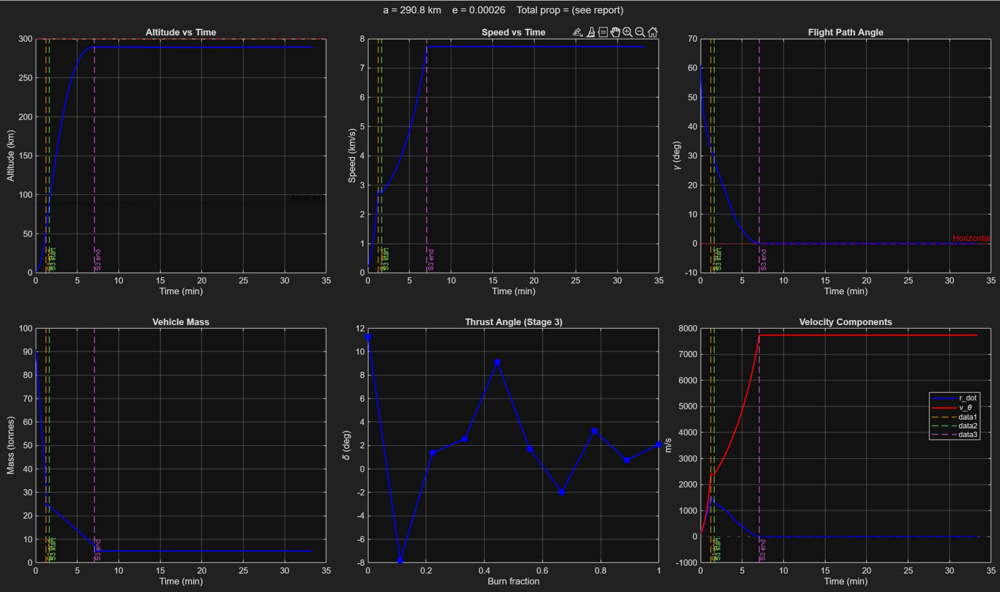

I built a numerical tool that, for a rocket with a fixed engine, works out how much propellant each stage should carry and what path it should fly to reach a target orbit while burning as little propellant as possible.

Rockets are almost entirely propellant by mass, so every design decision comes back to using that propellant as efficiently as possible. Because building a new engine is expensive, most launch vehicles are designed around an existing, already-tested engine. That leaves two big open questions: how to split the available propellant between stages, and what flight path to fly. This project treats both as one optimization problem.
I modeled a two-stage rocket, a solid first stage that flies a gravity turn through the atmosphere and a liquid-fueled second stage that finishes the climb to orbit in vacuum. Given the engine's performance and the rocket's physical parameters, the tool searches for the propellant masses, launch angle, and thrust-steering profile that reach a chosen orbit using the least propellant.
Why this is hard. The relationship between propellant and achievable velocity is logarithmic, so small amounts of extra weight or drag get expensive fast. On top of that, the underlying physics only lets you improve the design by trial and error unless you set it up as a formal optimization problem, which is what this project does.
Tsiolkovsky's rocket equation ties a vehicle's achievable velocity change to its exhaust velocity and how much of its mass is propellant. Because that relationship is logarithmic, adding propellant gives smaller and smaller returns, and drag or gravity losses become expensive to make up. A typical launch vehicle is roughly 90% propellant by mass, with payload as little as 2%.
Nozzle performance also depends on altitude: a nozzle sized for sea level wastes potential thrust in vacuum, and vice versa. This is a major reason rockets fly in stages, a high-thrust stage to punch through the dense lower atmosphere, followed by a stage optimized for vacuum to finish the job. Rather than design a custom engine for each mission, engineers often reuse an existing engine and instead optimize propellant split and trajectory around it, which is exactly the problem this project addresses.
The simulation combines a stage model, an ideal engine model, and standard gravity, drag, mass, and atmosphere models into one set of equations of motion, written in a polar coordinate system centered on the Earth so the ascent connects naturally to orbital mechanics.
Everything the model needs, chamber temperature and pressure, nozzle areas, drag coefficient, structural mass fractions, and target orbit, is set by the user in a parameters file, so the same tool can be pointed at different rockets and missions.
The ascent is posed as a nonlinear program and solved by direct transcription: the trajectory is simulated with MATLAB's variable-step Runge-Kutta integrator, and an outer optimizer (fmincon, using sequential quadratic programming) adjusts the design variables to minimize total propellant while meeting the mission constraints.
The design variables are the two stage propellant masses, the initial launch angle, and ten points describing how the second stage's thrust vector changes over the burn. The main constraints require the final orbit to match the target semi-major axis and eccentricity; bounds keep the search within physically reasonable propellant masses and launch angles.
A plain optimizer struggles here because a bad starting guess often produces a trajectory that simply crashes, giving the solver nothing useful to improve on. To fix this, the tool uses a two-level approach: a quick, simplified inner solve (assuming no active steering) generates a reasonable starting point, which is then handed to the full optimizer to refine into a converged solution.
For a representative target orbit (300 km circular) and a set of historically reasonable engine and rocket parameters, the reduced inner problem produced a starting guess in a fraction of the effort of the full solve, and the full optimizer then converged to a feasible ascent in 31 iterations.
fmincon is a gradient-based local solver, the result it finds depends on the starting guess and the bounds placed on the variables, so different runs can land on genuinely different, still-valid trajectories.

Both runs satisfy the same target-orbit constraints starting from the same engine and rocket parameters, yet they reach noticeably different propellant totals and launch angles. That gap is the clearest illustration of the paper's main point: for this kind of trajectory problem, the constraints and starting guess shape the answer as much as the physics does, so exploring the solution space is part of the design process, not an afterthought.
This project shows that propellant allocation and ascent trajectory for a staged launch vehicle can be handled as a single nonlinear optimization problem, and that a two-level solve (a cheap reduced problem feeding a full trajectory optimizer) makes that problem tractable to initialize reliably. The results also show the limits of a local, gradient-based solver: it reliably finds a feasible trajectory, but not necessarily the cheapest one, and different bounds can lead to qualitatively different, equally valid designs. Even with simplified engine and atmosphere models, the framework is useful for exploring staging and trajectory trade-offs early in a launch vehicle's design.
This page summarizes the paper for a general audience. Figures are reproduced from the paper. The full derivations (Appendix A) and code (Appendix B) are linked above. The PDF has the complete methodology.